The six hero screens the brief names, as they ship today (left, from the round 1 captures) and as revision 25 of docs/specs/kiwi-design-2027.md draws them (right), in light and dark, plus Home in Arabic (RTL, light and dark) and on the smallest supported phone (375 × 667). The Floor is shown only as it ships: the owner kept the floor plan as it is (revision 23, spec §18.4). The right-hand frames are HTML and CSS from the spec's tokens and coordinates, at the stated device size, then scaled to fit.
Faces and icons. Text is set in the files beside this page (kiwi-design-2027-preview/fonts/, each with its licence): Inter Tight, the face the spec ships (§6.1; no Inter file exists in the repository, so revision 6's switch to Inter stays withdrawn), and IBM Plex Sans Arabic, declared under the kit's own family name, Kiwi Arabic, with its Arabic-only range and 108 % size-adjust (§6.1). Every frame, Latin and Arabic, and every chart label is set in the kit's stack exactly as §6.1 ships it, "Inter Tight", "Kiwi Arabic", "Inter Tight Fallback", system-ui, with the fallback face declared as shipped (local Arial, limited to Inter Tight's Latin ranges), so the page can no longer hide a face that takes Arabic letters before Plex does (revision 14, B1). Since revision 15 (P13) every face here is declared exactly as §6.1 writes it, Inter Tight's two ranges and the Arabic 700 face included, and the kit self-test compares each descriptor and each file's size with the spec's. Every width in §6.6 is measured in these same files at the spec's Inter Tight tracking, so the frames below are drawn in the face the numbers describe. Icons are the vendored Material SVGs from assets/icons/material/, inlined as a sprite: no icon font and no network request.
The frames are static. They were written once from the worked example (§18.0, Café Atlas, Monday 12 October 2026, 17:39) and are not rendered from it. The fixture embedded below holds only sources (lines, prices, the order and ticket logs, dated visits, tallies, cash movements, the clock). The page derives every expected figure, date and time from those sources (the date and every "at 17:39" come from the fixture's date and clock), compares it with what the frames draw, including the rail's cashier, the Orders hour headers, the VIP stars (every icon read from its drawing, never from its label or its reference: the path data of the symbol its use draws is hashed and compared with the vendored file in assets/icons/material/; in both themes, computed style is read on the icon's use, its svg, the icon and each ancestor up to the frame (display, visibility, opacity, transform, scale, rotate, clip-path, the legacy clip, mask, filter, mix-blend-mode, content-visibility hidden, an outline drawn inward; only §9.5's horizontal mirror is allowed, on an icon §9.5 lets mirror), on the sprite path itself (it must not be display: none or hidden, its opacity and fill-opacity must be above 0, its fill and stroke must equal the sprite's, and it carries no transform and none of the paint effects above), and for the fill (the use and the svg filled in the icon's own colour, with a fill-opacity above 0, and stroked with nothing); the use spans the whole box (no x or y, width and height 100 %) and the svg carries no viewBox; the icon, its svg and its use carry no shadow and no background image, and no ancestor an inset shadow or a background image; no element of that chain from the svg up is sent behind (a negative z-index) a background that an ancestor paints below its stacking context's root; the positioned ::before and ::after of the icon and its ancestors that paint and have no negative z-index, each placed from the containing block that any property creating one gives it (position, transform, translate, rotate, scale, perspective, filter, backdrop-filter, preserve-3d, will-change, containment, container-type, content-visibility auto) and from its offsets, margins, size, padding and borders, must together cover neither the icon's centre nor 7 or more of 25 points spread over its box; the icon's svg box must have an area and lie inside every box that clips it (an icon may run past the bottom of a scroll region, which is content the reader scrolls to), its drawn glyph must have an area and lie inside that box, to 1 px, and its colour must stand at least 3:1 against the background colours behind it; and with the frame on screen, the browser's hit test at its centre, and at three of four points inset from its corners, must find the icon, its svg, its use or one of its ancestors, except the floating tab bar over scroll content and the page behind an open sheet's scrim (points the reader cannot see, below a scroll fold, are not tested). This is a summary; the complete list is spec §18.0's check 13, and it is closed: the check reads what that list names, and nothing else. Any paint it does not model is not seen, whatever it is, including anything inside a shadow root, a canvas or an image; a glyph a font would draw; anti-aliasing and compositing by the GPU; an opacity, a fill-opacity or a size above zero but too small to see; a CSS d; a pseudo-element that is not positioned, has a negative z-index, or is moved by its own transform; paint outside an element's own box (an outline, an outer box-shadow); and an element or pseudo-element kept out of the hit test. This is not a pixel test; and every Home arrow, its glyph's fill and its change's text are compared, by computed colour, with their polarity in both themes), the till tiles' badges and option marks, the chart (its band, each line's value at the clock, the now-dot, the gridlines and the axis labels), the bell's badge, the Kiwi AI source chip, the daily goal line and its mark as painted (its size, how far and from which side it is filled, and its colour against the track, in both themes; revision 25), the Kiwi AI questions of the store's trade and the second frame's shop (revision 25), the Takeaway badge's count of online orders waiting (revision 25), eleven paid-sale sync cases with their rows, banner and store lock, four replay cases with what shows each held entry, six store-lock cases (a service open on a re-paired and on an unpaired till, idle tills, a till paired back, and a service with no store) and six codes entered on the pad the lock opens, all through the one predicate §10.26 adopts from 762bb255, plus the venue, the zones, where each table sits, the till's categories and the order of its dishes, and each customer's initials, with every number and date built by the same KiwiFormat the spec defines and its test vectors asserted first, and every comparison made code point by code point (an ordinary space where the formatter puts U+00A0 fails), and then breaks one source or one frame at a time to prove each check can fail. Drawn but not compared (revision 22; revision 24 adds presence; revision 25 adds labels): which segment of a segmented control and which tab of the capsule is selected; whether a control without an icon is present (check 19 holds every control that draws an icon: each frame must draw each icon as many times as it is written with it, so removing the mic, the Action Center, Calculator or Attach turns it red; a labelled control's label is held too, so the Kiwi AI capsule, Actions, Calculator and Attach turn it red when their word goes (revision 25); any other text-only control, such as a Plain link or a segment, is held only where a check reads its text); whether a text is painted (its visibility, opacity, colour against the surface, size and position); the text checks read the text a frame holds; icons are checked for paint (check 13), and of text only the deltas’ colour and fill, which check 1 compares with their polarity (their visibility, opacity, size and position are not read). The before images sit next to this page in kiwi-design-2027-preview/; the iPad captures are portrait because the harness shot portrait, and the spec's iPad heroes are landscape.
Running the fixture checks…
Running the mutation self-test…
Waiting for layout to run the kit self-tests…
1 · Dashboard Home
Spec §18.1 · iPhone 6.9, 440 × 956 pt, shown at 60 %. Principle 1: no primary; the key figure is the largest text. Five type steps. The Kiwi wordmark leads the nav bar, from the shipped files (revision 23). Under the key figure, the daily goal line: 82% of the 23,500 MAD goal, with its mark filled to the share (revision 24).
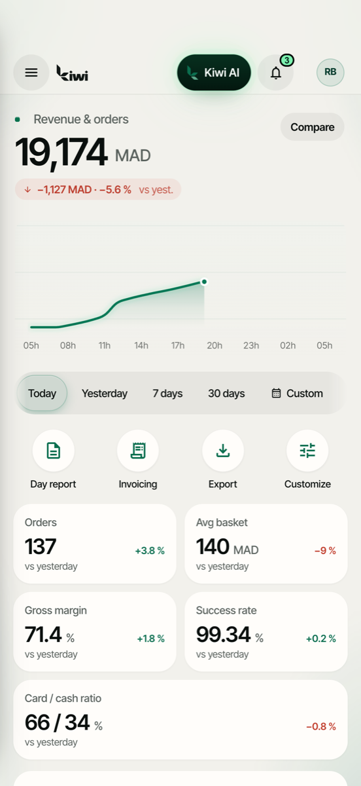
Before · light.After · light.
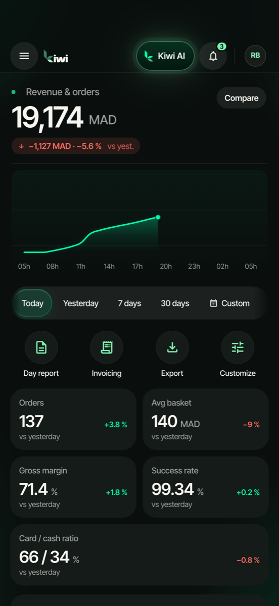
Before · dark.After · dark.
One figure leads: 19,174 MAD in Display, with the baseline named in full beside the delta. The delta row is the compare control (§10.33): arrow, 4, delta, 6, baseline, 4, expand, with no leading space.
The chart's legend sits in a 26 pt band at the top of the plot that no data may enter: the y scale puts the larger series' maximum over the whole day at the band's lower edge (§10.22), so a morning-heavy day cannot run under it. Its key is its own, capitalised: "Yesterday at 17:39". A tap opens the data.
"Latest orders" is a section label over one group whose first row (778 to 842) is fully visible at rest, 10 above the tab capsule; "See all 137 orders" is the group's last row.
1b · Home in Arabic, and on the smallest phone
Spec §9.5 and §18.1 (AR, light and dark, 440 × 956) and §18.11 (EN, light, 375 × 667), both shown at 60 %. Both carry the goal line under the key figure (revision 24); in Arabic its mark fills from the right.
After · AR, light. The same frame in the light theme.After · AR, dark. Mirrored: venue at the right, the chart's day starting at the right and its legend in the band at the top right, Home first from the right. Numbers stay LTR inside bdi. This frame is checked too: its figures, its three latest orders and its customer count (checks 1, 2 and 8).After · 375 × 667, light. Chart 120 tall; its legend sits in the 26 pt band at the top of the plot that no data enters (§10.22). The compare control is one line (304.5 of 343, §6.6). The first two tiles end at 542, 55 above the capsule; the second row passes under it.
2 · Orders
Spec §18.2 · iPhone 6.9, 440 × 956 pt, shown at 60 %. Inline title, so the key figure (Title) is the largest text. Three type steps.
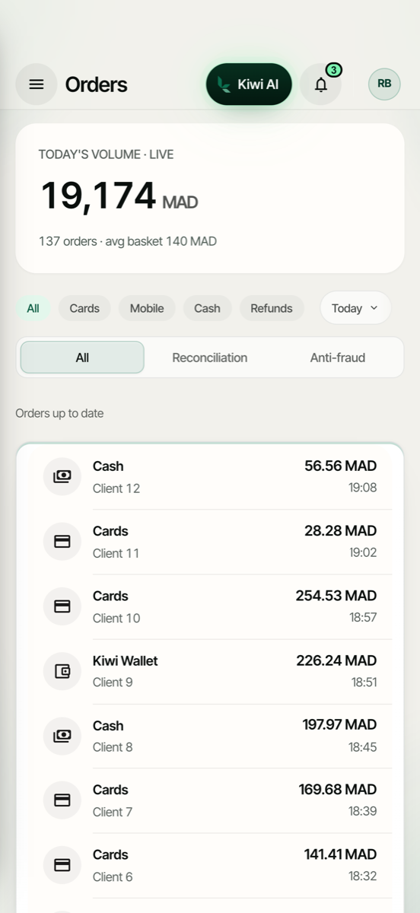
Before · light.After · light.
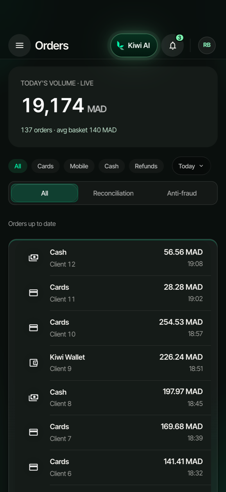
Before · dark.After · dark.
The 17:00 group holds every order of that hour, #1200 to #1208 and the refund of #1201, so the numbers do not skip; the rows below the capsule scroll under it.
Every order in the log is a row here, in log order, newest first, and every row is checked against the log, not against Home: each amount is the sum of the order's lines, and no time is after the clock (check 2). A missing or reordered row fails.
3 · Till: menu and bill
Spec §18.3 · iPad 13 landscape, 1376 × 1032 pt, shown at 50 %. One primary: "Send 2 to kitchen". Five type steps. The rail's More (not drawn here) keeps every function of the shipped rail, among them Open the drawer, Team on shift with breaks, Fullscreen in a browser and Sign out (spec §12, §18.3; revision 24).
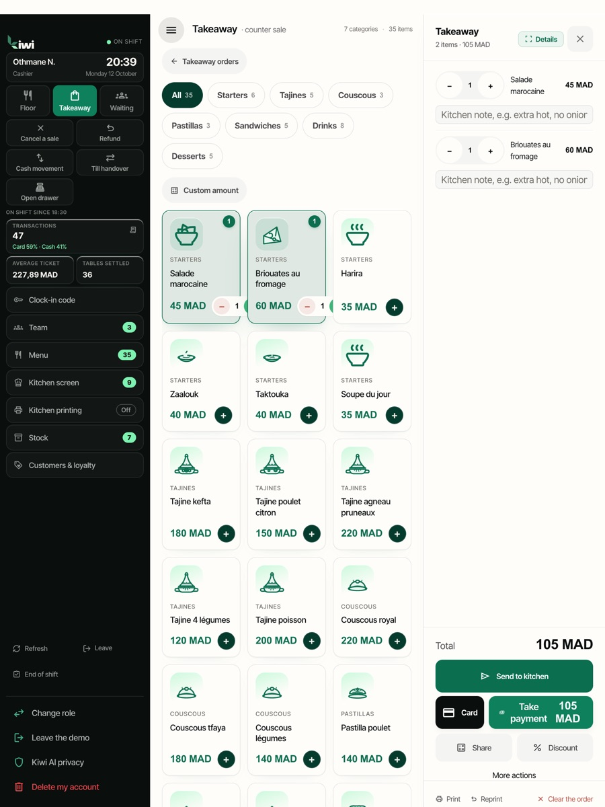
Before · light (portrait capture).After · light.
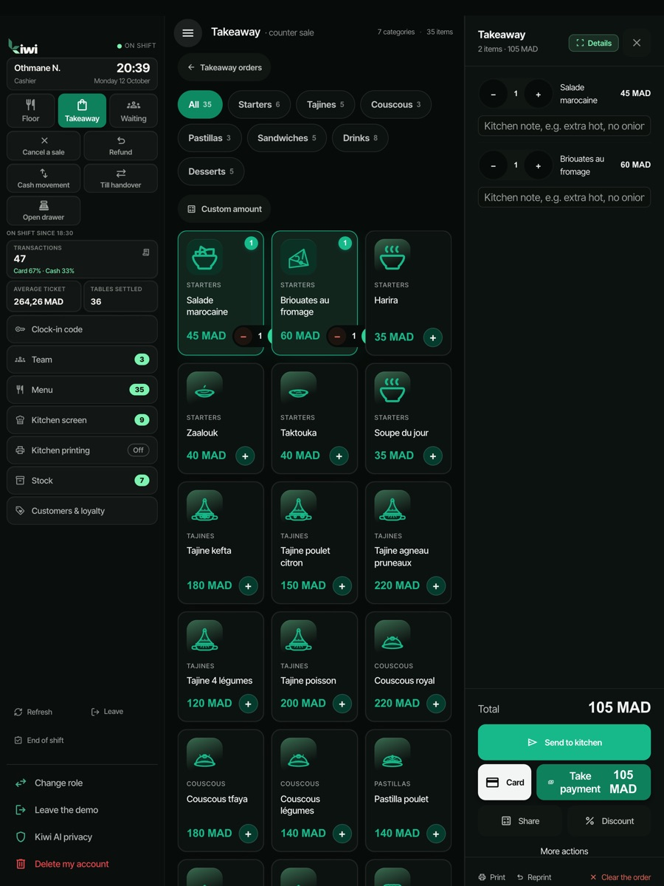
Before · dark (portrait capture).After · dark.
Table 4: Harira was sent at 17:28 (kitchen ticket 44, 11 minutes); the tajine and the salad are not sent yet, so the primary is the send. Every amount is quantity × the menu price (check 7), and the total is the sum of the lines (check 10).
The categories are a jump list with no "All": the lens sits on Starters because its header is the one stuck under the track. "Enter amount" is sized to its label.
The bill is a persistent pane (432 at this width, §13.3). Each line is checked against Table 4's record: name, quantity, amount, note, and whether it was sent and when (check 10). The rail's Kitchen badge counts the 3 New tickets, and its name says so: "Kitchen, 3 new" (§10.13); the cashier is Othmane Naciri, "ON".
4 · Floor
Kept as shipped, by the owner’s decision.
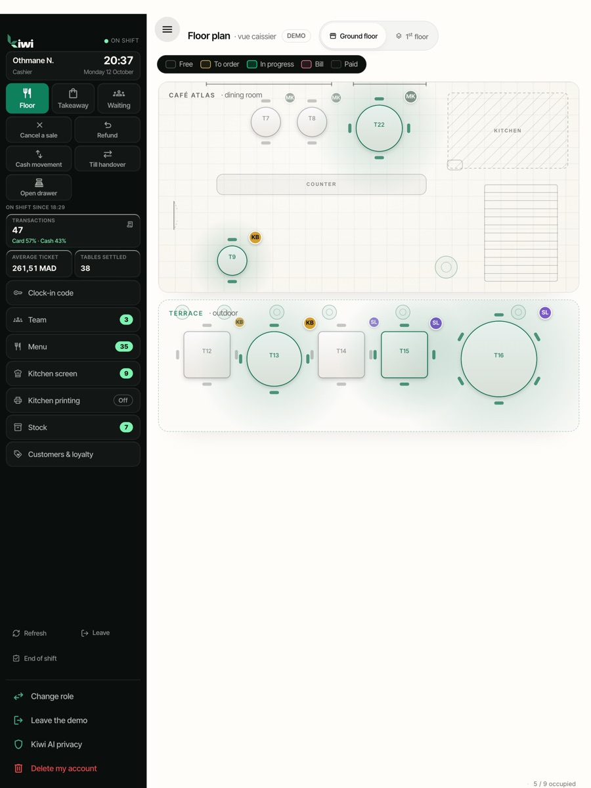
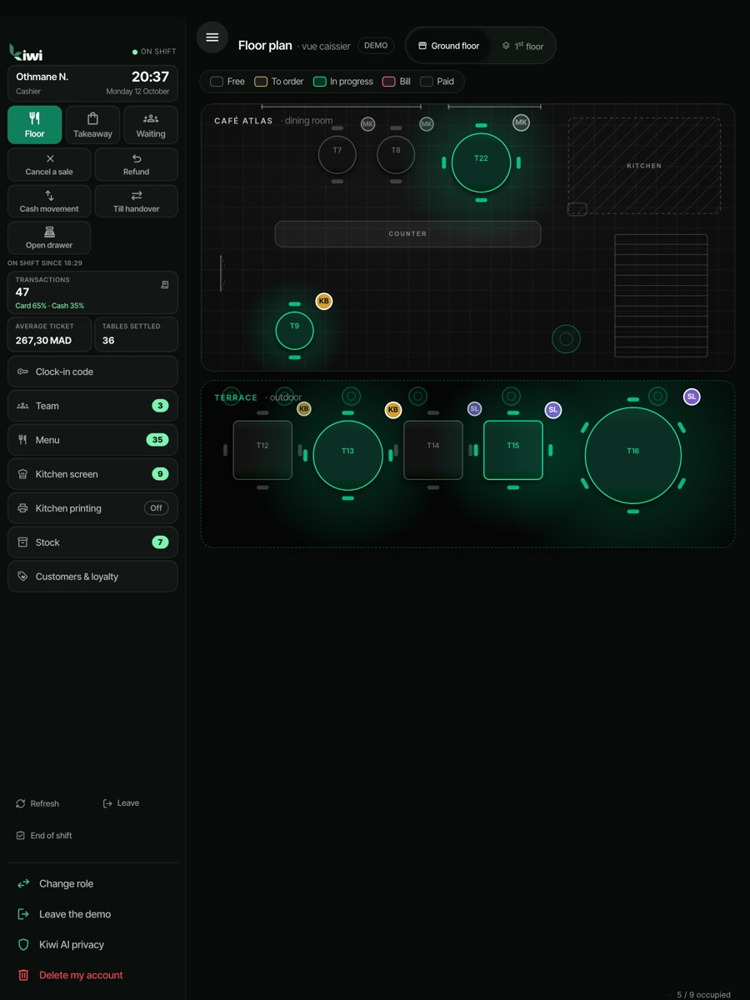
5 · Customers
Spec §18.5 · iPhone 6.9, 440 × 956 pt, shown at 60 %. Statuses are words; the status counts sum to All, and VIP is a filter over them. The overflow holds Export, Loyalty program, Retention and Campaign (revision 23). Two type steps.
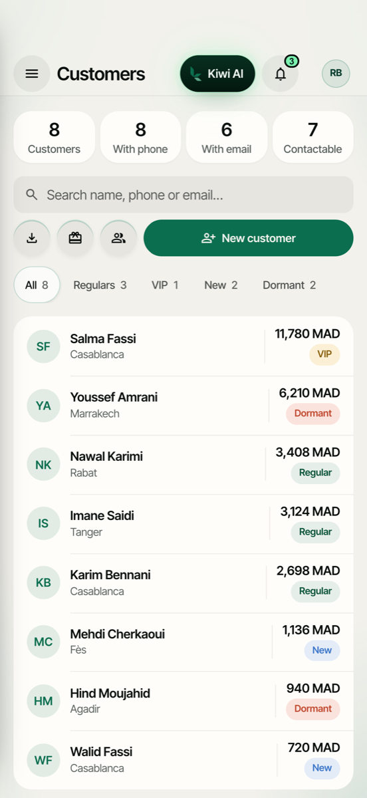
Before · light.After · light.
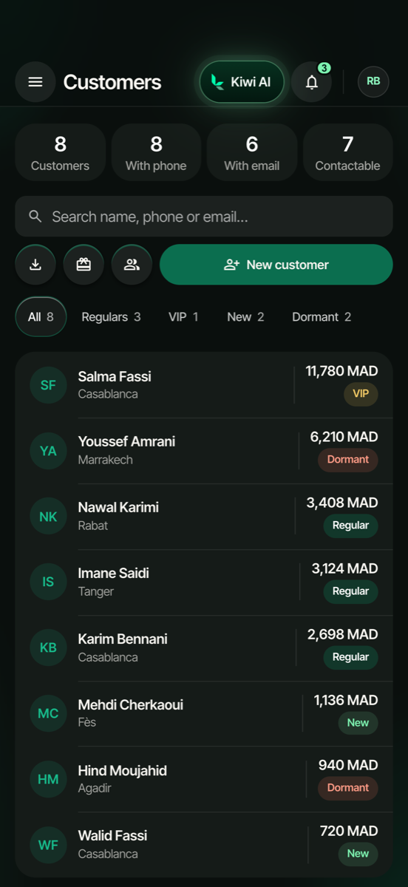
Before · dark.After · dark.
Regular 4 + New 2 + Inactive 2 = All 8, computed from each customer's dated visits: New if the first visit is 30 days ago or less, else Inactive if the last is more than 60 days ago, else Regular. Home's "3 of 8" are the customers with a visit today and at least two in all; Leila is New and returning.
Rows are sorted by last visit, newest first, ties by lifetime spend, highest first (check 9). Subtitles wrap to two lines instead of truncating (§10.8).
6 · Kiwi AI
Spec §18.6 · iPhone 6.9 sheet at the large detent, 440 × 956 pt, shown at 60 %. One primary: the send button, disabled until text is entered. Kept from the shipped assistant (revision 23): the mic, the Action Center with its pending count, the calculator, the attach button and the two simulators. Revision 24 labels the Action Center "Actions", draws the mic in ink-1, and makes the Today card the first card, the shipped Home recommendation's place (spec §18.6). Revision 25 takes rows 1 to 3 from the store's trade (a restaurant here) and shows the Today card only once the store has a sale that day. Four type steps.
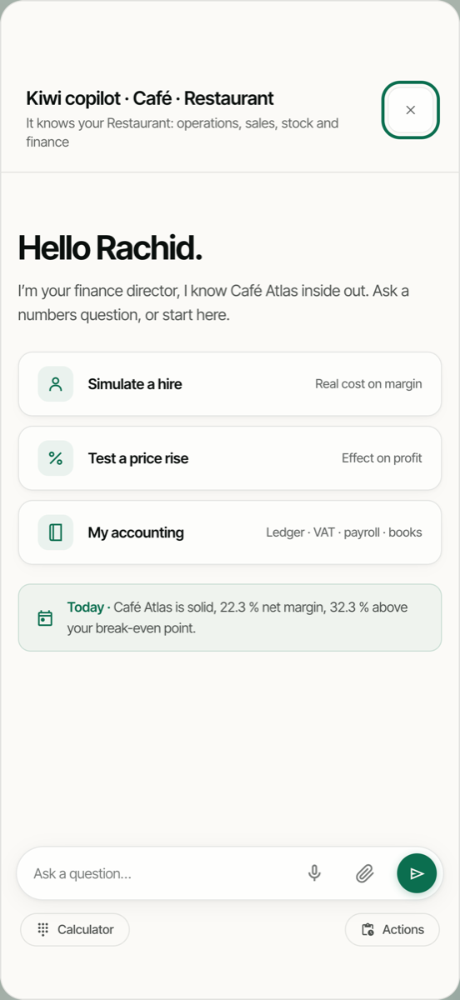
Before · light.After · light.
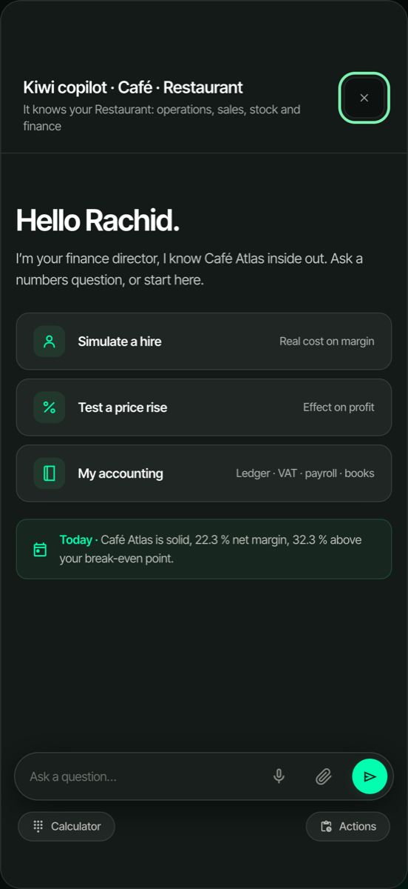
Before · dark.After · dark.After · a new shop, light. Revision 25: rows 1 to 3 follow the trade, here a shop's, from the shipped aiChips; costs not set up, so rows 4 to 6 are the new-store questions; no sale yet today, so no Today card (spec §18.6, check 20).After · a new shop, dark.
The Today card quotes the same figures as Home, with a source chip one step lighter than the card (§10.7).
The suggestions are a surface-2 group, one step from the surface-1 sheet (§10.8), so the group reads as a container.
The disabled send is surface-3 with an ink-3 icon (§10.1), not a faded accent.
17:39
Café Atlas
Kiwi AI
3
Today · Monday 12 October
19,174 MAD
82% of the 23,500 MAD goal
−1,127 MAD (−5.6%)vs yesterday at 17:39
TodayYesterday7 days30 days
TodayYesterday at 17:39
Orders137+4
Average basket140 MAD−13 MAD
Card share66%+1 pt
Returning3of 8 customers
Latest orders
#1208 · Table 2
Card · 17:36
156 MAD
#1207 · Takeaway
Cash · 17:31
84 MAD
#1206 · Table 10
Card · 17:24
212 MAD
See all 137 orders
Home
Orders
Report
Customers
More
17:39
Café Atlas
Kiwi AI
3
اليوم · الاثنين 12 أكتوبر
19 174 درهم
82 % من هدف 23 500 درهم
−1 127 درهم (−5,6 %)مقارنةً بالأمس عند 17:39
اليومأمس7 أيام30 يومًا
اليومالأمس عند 17:39
الطلبات137+4
متوسط السلة140 درهم−13 درهم
حصة البطاقة66 %+1 نقطة
الزبناء العائدون3من أصل 8 زبناء
آخر الطلبات
#1208 · الطاولة 2
بطاقة · 17:36
156 درهم
#1207 · للأخذ
نقدًا · 17:31
84 درهم
#1206 · الطاولة 10
بطاقة · 17:24
212 درهم
اعرض كل الطلبات (137)
الرئيسية
الطلبات
التقرير
الزبناء
المزيد
17:39
Café Atlas
Kiwi AI
3
Today · Monday 12 October
19,174 MAD
82% of the 23,500 MAD goal
−1,127 MAD (−5.6%)vs yesterday at 17:39
TodayYesterday7 days30 days
TodayYesterday at 17:39
Orders137+4
Average basket140 MAD−13 MAD
Card share66%+1 pt
Returning3of 8 customers
Home
Orders
Report
Customers
More
17:39
Orders
Today · Monday 12 October
19,174.00 MAD
137 orders · average basket 139.96 MAD
AllCardCashOtherRefunds
17:00
#1208 · Table 2
Card · 17:36 · Karim
156.00 MAD
#1207 · Takeaway
Cash · 17:31 · Othmane
84.00 MAD
#1206 · Table 10
Card · 17:24 · Nadia
212.00 MAD
#1205 · Takeaway
Cash · 17:20 · Othmane
58.00 MAD
#1204 · Table 8
Card · 17:16 · Karim
176.00 MAD
#1203 · Takeaway
Cash · 17:14 · Othmane
37.00 MAD
#1201 · Table 7 · Refund
Card · 17:12 · Karim
−45.00 MAD
#1202 · Table 5
Card · 17:10 · Nadia
247.00 MAD
#1201 · Table 7
Card · 17:08 · Karim
132.00 MAD
#1200 · Takeaway
Cash · 17:05 · Othmane
62.00 MAD
16:00
#1199 · Table 11
Card · 16:52 · Karim
318.00 MAD
#1198 · Takeaway
Cash · 16:47 · Othmane
41.00 MAD
#1197 · Table 3
Card · 16:40 · Karim
204.00 MAD
Home
Orders
Report
Customers
More
Floor
Takeaway1
Waiting
Kitchen3
More
ON
Othmane
Search the menu
Enter amount
StartersTajinesCouscousPastillasDrinksDesserts
Starters
Harira
35.00 MAD
1
Salade marocaine
45.00 MAD
1
Zaalouk
38.00 MAD
Briouates aux crevettes
52.00 MAD
Taktouka
38.00 MAD
Soupe du jour
30.00 MAD
Bissara
28.00 MAD
Msemen au miel
Sold out
Tajines
Tajine poulet citron
150.00 MAD
1
Tajine kefta aux œufs
95.00 MAD
Tajine agneau pruneaux
165.00 MAD
Tajine de légumes
85.00 MAD
Tajine de poisson
140.00 MAD
Tanjia marrakchia
170.00 MAD
Couscous
Couscous sept légumes
110.00 MAD
Couscous tfaya
135.00 MAD
Couscous royal
160.00 MAD
Seffa medfouna
120.00 MAD
Couscous au poisson
145.00 MAD
Table 4
3 guests · open since 17:02 · Karim
Not sent · 2
1×
Tajine poulet citron
No olives
150.00
1×
Salade marocaine
45.00
Sent 17:28
1×
Harira
35.00
Total230.00 MAD
Split
Discount
Send 2 to kitchen
17:39
Customers
8 known customers · 7 can be contacted
Search name, phone or email
All 8Regular 4VIP 1New 2Inactive 2
SB
Salma Bennani
Casablanca · last visit today
11,780 MAD
Regular
YA
Youssef Alaoui
Casablanca · last visit today
6,420 MAD
Regular
LF
Leila Fassi
Mohammedia · last visit today
380 MAD
New
OB
Omar Benjelloun
Casablanca · last visit yesterday
4,150 MAD
Regular
HB
Hind Berrada
Rabat · last visit 2 days ago
3,960 MAD
Regular
MC
Mehdi Chraibi
Casablanca · last visit 6 days ago
210 MAD
New
SI
Sanae Idrissi
Rabat · last visit 74 days ago
1,240 MAD
Inactive
AL
Amine Lahlou
Casablanca · last visit 91 days ago
860 MAD
Inactive
Home
Orders
Report
Customers
More
17:39
Café Atlas
Kiwi AI
Actions2
Answers come from Café Atlas's own records. Every figure links to its source.
Read how Kiwi AI uses your data
Today at 17:39
19,174 MAD from 137 orders, 1,127 MAD less than yesterday at the same time.
Sales · today
Try asking
Which dish should I drop?
Tonight's sales forecast
Why is my average basket falling?
Can I hire a waiter?
What if I raise my prices by 5%?
Calculator
Attach
Ask about your sales
17:39
Atelier Lina
Kiwi AI
Actions
Answers come from Atelier Lina's own records. Every figure links to its source.